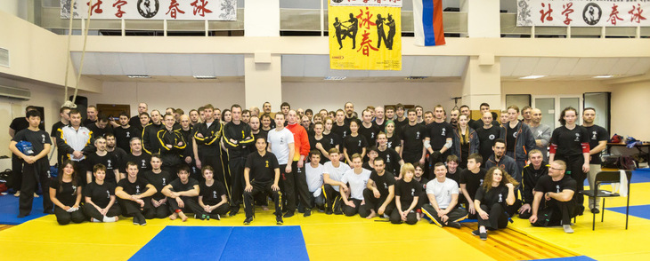
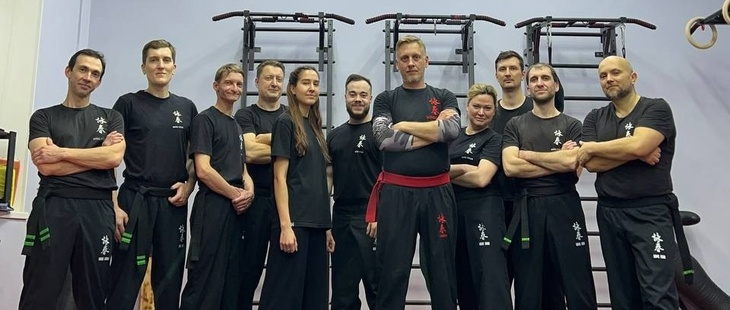
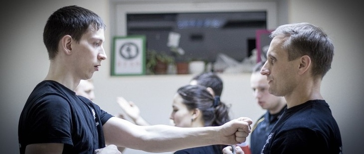
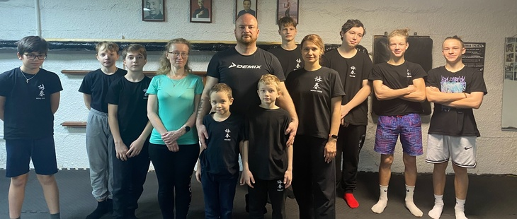

Центральный зал Кронверкский пр., 9, лит. Б (ДФК ПГУПС)
Центральный зал IWCO у метро Горьковская — место регулярных тренировок, семинаров и соревнований. Здесь занимаются в традиции Вин Чун линии Ип Мана и отрабатывают технику с партнёром под руководством инструкторов.
Ип Ман → Чоу Дзе Чуен → Дональд Мак → Анатолий Белощин → Осман Динаев
В зале есть ринг, татами, мешки, груши и зеркала. Здесь тренируются в том числе старшие ученики школы. Перед первым посещением свяжитесь с инструктором, чтобы выбрать подходящую группу.

Афонская, 5
Зал IWCO у метро Удельная находится на Афонской улице, 5. Небольшая группа позволяет уделять внимание технике каждого ученика и последовательно осваивать программу Вин Чун.
Ип Ман → Чоу Дзе Чуен → Дональд Мак → Анатолий Белощин → Осман Динаев → Алексей Борзов
Алексей Борзов помогает освоить базовые движения и проверить их в парных упражнениях. Время занятий опубликовано в расписании; наличие мест и условия посещения уточните перед первым визитом.

пр. Шаумяна 8
Зал IWCO у метро Ладожская находится на проспекте Шаумяна, 8. Инструктор Илья Маник ведёт занятия по программе IWCO: техника, парная работа и применение изученных движений.
Ип Ман → Чоу Дзе Чуен → Дональд Мак → Анатолий Белощин → Осман Динаев → Илья Маник
Это место, где традиции сочетаются с современными методиками тренировок. Мы уделяем внимание индивидуальной работе с каждым учеником, помогая раскрыть потенциал через глубокие знания стиля и практическое применение техник.

Гатчина ул. Генерала Кныша 15
В зале IWCO в Гатчине на улице Генерала Кныша, 15 проходят занятия младшей и старшей групп. Инструктор Алексей Васильев помогает развивать физическую подготовку и изучать технику Вин Чун.
Ип Ман → Чоу Дзе Чуен → Дональд Мак → Анатолий Белощин → Осман Динаев → Алексей Васильев
В нашем зале города Гатчина существует две группы.
Взрослая группа:
В данных группах основной задачей является передача технического арсенала, используется академический подход, в результате которого студенты получают навыки и знания инструкторского состава.
Физическая кондиция:
- Cвод комплексов на развития: силы, скорости, гибкости;
- Свод комплексов на развития энергии;
- Практики оздоровления, закаливания, восстановления.
Техническая и стратегическая база: программа IWCO.
Детская группа:
Основная цель занятий в детских группах - это реализация классического подхода, традиционных школ ушу, где физическое и моральное воспитание идут рука об руку.
1. Физическая подготовка:
- Сила, гибкость, скорость.
2. Техническая подготовка:
- Программа IWCO;
- Прикладное оружие;
- Спарринги по правилам IWCO.
3. Идеологическая подготовка:
- Истории различных боевых искусств, культура общения и поведения.